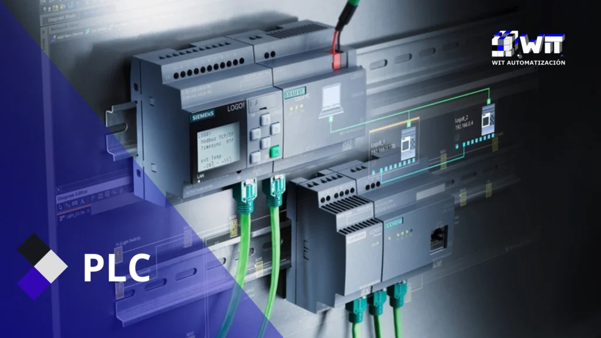
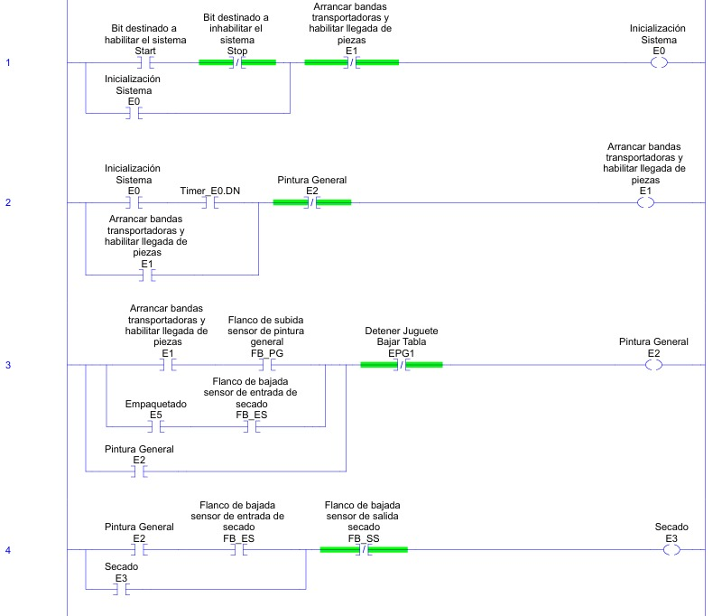

<!DOCTYPE html>
<html lang="en">
    <head>
        <meta charset="UTF-8">
        <meta name="viewport" content="width=device-width, initial-scale=1.0">
        <title>Controlador Industrial - Red Forge Toys</title>
        <link rel="stylesheet" href="styles/styles.css">
        <link rel="stylesheet" href="styles/plc.css">
        <script src="https://cdn.jsdelivr.net/npm/chart.js"></script>
        <script src="https://cdn.jsdelivr.net/npm/chartjs-plugin-datalabels"></script>
    </head>
</html>
<body>
    <header>
        
        <h1>Red Forge Toys</h1>
        <p>Innovación y Automatización para un Futuro Divertido</p>
        <nav>
            <ul class="menu">
                <li><a class="menu home" href="index.html" data-title="Home"><span><span>Home</span></span></a></li>
                <li><a class="menu gestion" href="gestion.html" data-title="Gestión de Proyecto"><span><span>Gestión de Proyecto</span></span></a></li>
                <li><a class="menu Produccion" href="gest_produccion.html" data-title="Gestión de Producción y Automatización"><span><span>Gestión de Producción y Automatización</span></span></a></li>
                <li><a class="menu evaluacion" href="economica.html" data-title="Evaluación Económica del Proyecto"><span><span>Evaluación Económica del Proyecto</span></span></a></li>
                <li><a class="menu celda" href="Celda.html" data-title="Celda de Manufactura Robotizada"><span><span>Celda de Manufactura Robotizada</span></span></a></li>
                <li><a class="menu digital" href="digital_factory.html" data-title="Digital Factory"><span><span>Digital Factory</span></span></a></li>
                <li><a class="menu plc" href="plc.html" data-title="Controladores Industriales (PLC)"><span><span>Controladores Industriales (PLC)</span></span></a></li>
                <li><a class="menu scada" href="scada.html" data-title="Sistema de Supervisión SCADA"><span><span>Sistema de Supervisión SCADA</span></span></a></li>            
                <li><a class="menu comentarios" href="comments.html" data-title="Comentarios"><span><span>Comentarios</span></span></a></li>         
            </ul>
        </nav>
    </header>
    <main>
        <section class="seccion1">
            <div class="texto">
                <h1>Controladores industriales</h1>
                <p>
                    Utilizando un sistema de control basado en Controladores Lógicos Programables (PLC) para gestionar y optimizar cada etapa del proceso de fabricación de nuestros juguetes.
                     En esta sección esta disponible el paso a paso del código del PLC.
                </p>
            </div>
            <div class="imagen">
                
            </div>
        </section>
<section class="seccion">
    <h1>Programación de ladder y Grafcet</h1>
    <div class = "horizontal">
        <div class = "elementos">
            <h2>Ladder</h2>
            
            <p class>La implementación del GRAFCET en Studio 5000 se realizó mediante una estructura organizada
                en rutinas, donde se estableció una relación clara entre las etapas del proceso y las transiciones. Esta
                integración se llevó a cabo a través de la definición de variables específicas que representaban tanto
                las etapas como las condiciones de transición, permitiendo una correspondencia directa con el modelo
                gráfico del GRAFCET.</p>
        </div>
        <div class = "separador"></div>
        <div class = "elementos">
            <h2>Diagrama de GRAFCET</h2>
            <p>Hacer click en los recuadros para conocer mas detalles.</p>
            <div class="container">
                <div class="step"><div class="box" onclick="showModal('Inicializar Sistema')">E0: Inicializar Sistema</div></div>
                <div class="line"></div>
                <div class="step"><div class="box" onclick="showModal('Arrancar banda transportadora')">E1: Arrancar banda</div></div>        
                <div class="line"></div>
                <div class="step"><div class="box" onclick="showModal('Proceso de Pintura General')">E2: Pintura General</div></div>
                <div class="line"></div>
                <div class="step"><div class="box" onclick="showModal('Proceso de Secado')">E3: Secado</div></div>
                <div class="line"></div>
                <div class="step"><div class="box" onclick="showModal('Proceso de Ensamblado')">E4: Ensamblado</div></div>
                <div class="line"></div>
                <div class="step"><div class="box" onclick="showModal('Proceso de Pintura Específica')">E5: Pintura Específica</div></div>
                <div class="line"></div>
                <div class="step"><div class="box" onclick="showModal('Proceso de Empaquetado')">E6: Empaquetado</div></div>
                <div class="line"></div>
                <div class="loop-line"></div>
                <div class="horizontal-line"></div>
                <div class="horizontal-line2"></div>
            </div>
            
            <div id="modal" class="modal">
                <div class="modal-content">
                    <span class="close" onclick="closeModal()">&times;</span>
                    <h2 id="modal-title"></h2>
                    <p id="modal-description">Detalles sobre el proceso...</p>
                    
                </div>
            </div>
            
            <script>
                function showModal(title) {
                    const details = {
                        "Inicializar Sistema": { desc: "E0: Inicialización del Sistema\n Cuando el operador presiona el botón de Start, el sistema entra en la fase de inicialización (E0). En este estado, se lleva a cabo un proceso automático de preparación que dura 5 segundos, asegurando que todo el sistema se encuentre en condiciones óptimas antes de iniciar la producción.\n Activación del Proceso de Home: Todos los actuadores del sistema reciben la orden de moverse a su posición de referencia (Home). Esto incluye el posicionamiento de brazos robóticos, grippers,  y otros dispositivos que intervienen en el proceso.\n Detención de Bandas Transportadoras: Para evitar movimientos no deseados durante la inicialización, todas las bandas transportadoras se detienen completamente.", img: "Images/PLC/blank.png" },
                        "Arrancar banda transportadora": { desc: "Se activan la bandas transportadoras para permitir la llegada de piezas al sistema.", img: "Images/PLC/blank.png" },
                        "Proceso de Pintura General": { desc: "Las piezas entran a la estación de pintura general, donde son sumergidas en pintura durante 10 segundos. Luego, son extraídas, se dejan escurrir durante 20 segundos y continúan moviéndose sobre la banda transportadora", img: "Images/PLC/plc2.png" },
                        "Proceso de Secado": { desc: "Al salir de la pintura, las piezas ingresan a la zona de secado. La banda reduce su velocidad y se activan ventiladores hasta que las piezas pasen por el sensor de salida de secado.", img: "Images/PLC/plc3.png" },
                        "Proceso de Ensamblado": { desc: "Las piezas llegan a la estación de ensamblado, donde un operario ensambla manualmente los componentes para formar el juguete final.", img: "Images/PLC/blank.png" },
                        "Proceso de Pintura Específica": { desc: "El juguete ensamblado pasa a una estación donde un operario aplica detalles de pintura específicos según el diseño del producto mediante una maquina de tampografia.", img: "Images/PLC/blank.png" },
                        "Proceso de Empaquetado": { desc: "El juguete llega a la celda de empaquetado donde un robot coloca el juguete dentro de una caja, le pone la tapa y la deja en la banda transportadora de salida.", img: "Images/PLC/plc4.png" }
                    };
                    
                    document.getElementById("modal-title").innerText = title;
                    document.getElementById("modal-description").innerText = details[title].desc || "Detalles sobre el proceso...";
                    document.getElementById("modal-image").src = details[title].img || "";
                    document.getElementById("modal").style.display = "flex";
                }
        
                function closeModal() {
                    document.getElementById("modal").style.display = "none";
                }
            </script>
        </div>
    </div>
</section>
    </main>
    <footer>
        <!-- <p>&copy; 2025 Red Forge Toys. Todos los derechos reservados<a href="shitposting.html" class="snek">.</a></p>-->
        <p>&copy; 2025 Red Forge Toys. Todos los derechos reservados.</p>
        <a target="_blank" href="https://github.com/anhernadezdu/Red-Forge-Toys-APM2024-2S/tree/main"></a>
    </footer>
</body>